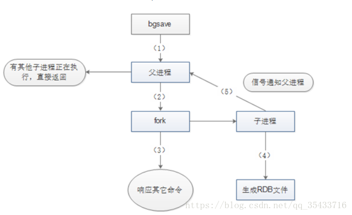
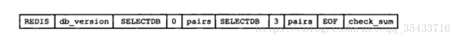
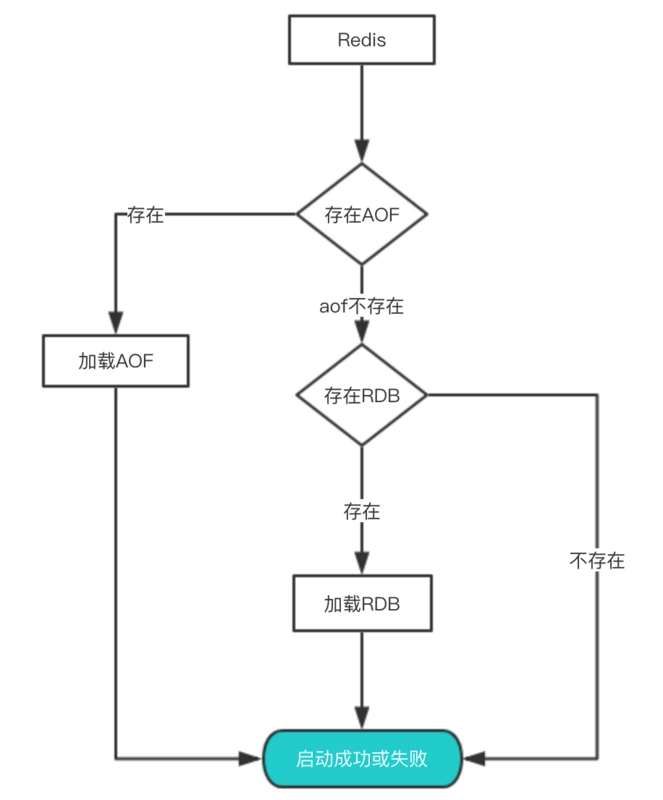

Redis持久化概述
Redis是一种高级key-value数据库。它跟memcached类似，不过数据可以持久化，而且支持的数据类型很丰富。有字符串，链表，集合和有序集合和map。支持在服务器端计算集合的并，交和补集(difference)等，还支持多种排序功能。所以Redis也可以被看成是一个数据结构服务器。
Redis的所有数据都是保存在内存中，然后不定期的通过异步方式保存到磁盘上(这称为“半持久化模式”)；也可以把每一次数据变化都写入到一个append only file(aof)里面(这称为“全持久化模式”)。
由于Redis的数据都存放在内存中，如果没有配置持久化，redis重启后数据就全丢失了，于是需要开启redis的持久化功能，将数据保存到磁盘上，当redis重启后，可以从磁盘中恢复数据。redis提供两种方式进行持久化，一种是RDB持久化（原理是将Reids在内存中的数据库记录定时dump到磁盘上的RDB持久化），另外一种是AOF（append only file）持久化（原理是将Reids的操作日志以追加的方式写入文件）。
持久化的功能：Redis是内存数据库，数据都是存储在内存中，为了避免进程退出导致数据的永久丢失，需要定期将Redis中的数据以某种形式(数据或命令)从内存保存到硬盘；当下次Redis重启时，利用持久化文件实现数据恢复。除此之外，为了进行灾难备份，可以将持久化文件拷贝到一个远程位置。
Redis持久化分为RDB持久化和AOF持久化：前者将当前数据保存到硬盘，后者则是将每次执行的写命令保存到硬盘（类似于MySQL的binlog）；由于AOF持久化的实时性更好，即当进程意外退出时丢失的数据更少，因此AOF是目前主流的持久化方式，不过RDB持久化仍然有其用武之地。
Redis持久化的两种方式：
持久化的配置
为了使用持久化的功能，我们需要先知道该如何开启持久化的功能。
RDB的持久化配置
1 | # 时间策略 |
配置其实非常简单，这里说一下持久化的时间策略具体是什么意思。
save 900 1表示900s内如果有1条是写入命令，就触发产生一次快照，可以理解为就进行一次备份save 300 10表示300s内有10条写入，就产生快照
下面的类似，那么为什么需要配置这么多条规则呢？因为Redis每个时段的读写请求肯定不是均衡的，为了平衡性能与数据安全，我们可以自由定制什么情况下触发备份。所以这里就是根据自身Redis写入情况来进行合理配置。
stop-writes-on-bgsave-error yes 这个配置也是非常重要的一项配置，这是当备份进程出错时，主进程就停止接受新的写入操作，是为了保护持久化的数据一致性问题。如果自己的业务有完善的监控系统，可以禁止此项配置， 否则请开启。
关于压缩的配置 rdbcompression yes ，建议没有必要开启，毕竟Redis本身就属于CPU密集型服务器，再开启压缩会带来更多的CPU消耗，相比硬盘成本，CPU更值钱。
当然如果你想要禁用RDB配置，也是非常容易的，只需要在save的最后一行写上：`save “”`
AOF的配置
1 | # 是否开启aof |
还是重点解释一些关键的配置：
appendfsync everysec 它其实有三种模式:
- always：把每个写命令都立即同步到aof，很慢，但是很安全
- everysec：每秒同步一次，是折中方案
- no：redis不处理交给OS来处理，非常快，但是也最不安全
一般情况下都采用 everysec 配置，这样可以兼顾速度与安全，最多损失1s的数据。
aof-load-truncated yes 如果该配置启用，在加载时发现aof尾部不正确时，会向客户端写入一个log，但是会继续执行，如果设置为 no ，发现错误就会停止，必须修复后才能重新加载。
工作原理
关于原理部分，我们主要来看RDB与AOF是如何完成持久化的，它们的过程是如何。
在介绍原理之前先说下Redis内部的定时任务机制，定时任务执行的频率可以在配置文件中通过 hz 10 来设置（这个配置表示1s内执行10次，也就是每100ms触发一次定时任务）。该值最大能够设置为：500，但是不建议超过：100，因为值越大说明执行频率越频繁越高，这会带来CPU的更多消耗，从而影响主进程读写性能。
定时任务使用的是Redis自己实现的 TimeEvent，它会定时去调用一些命令完成定时任务，这些任务可能会阻塞主进程导致Redis性能下降。因此我们在配置Redis时，一定要整体考虑一些会触发定时任务的配置，根据实际情况进行调整。
RDB的原理
RDB持久化是将当前进程中的数据生成快照保存到硬盘(因此也称作快照持久化)，保存的文件后缀是rdb；当Redis重新启动时，可以读取快照文件恢复数据。
在Redis中RDB持久化的触发分为两种：自己手动触发与Redis定时触发。
手动触发
save命令和bgsave命令都可以生成RDB文件。
save命令会阻塞Redis服务器进程，直到RDB文件创建完毕为止，在Redis服务器阻塞期间，服务器不能处理任何命令请求。
1 | save |
而bgsave命令会创建一个子进程，由子进程来负责创建RDB文件，父进程(即Redis主进程)则继续处理请求。
1 | bgsave |
bgsave命令执行过程中，只有fork子进程时会阻塞服务器，而对于save命令，整个过程都会阻塞服务器，因此save已基本被废弃，线上环境要杜绝save的使用。
自动触发
1 | # 时间策略 |
其中save 900 1的含义是：当时间到900秒时，如果redis数据发生了至少1次变化，则执行bgsave；save 300 10和save 60 10000同理。当三个save条件满足任意一个时，都会引起bgsave的调用。
save m n的实现原理
Redis的save m n，是通过serverCron函数、dirty计数器、和lastsave时间戳来实现的。
serverCron是Redis服务器的周期性操作函数，默认每隔100ms执行一次；该函数对服务器的状态进行维护，其中一项工作就是检查 save m n 配置的条件是否满足，如果满足就执行bgsave。
dirty计数器是Redis服务器维持的一个状态，记录了上一次执行bgsave/save命令后，服务器状态进行了多少次修改(包括增删改)；而当save/bgsave执行完成后，会将dirty重新置为0。
例如，如果Redis执行了set mykey helloworld，则dirty值会+1；如果执行了sadd myset v1 v2 v3，则dirty值会+3；注意dirty记录的是服务器进行了多少次修改，而不是客户端执行了多少修改数据的命令。
astsave时间戳也是Redis服务器维持的一个状态，记录的是上一次成功执行save/bgsave的时间。
save m n的原理如下：
1 | 每隔100ms，执行serverCron函数；在serverCron函数中，遍历save m n配置的保存条件，只要有一个条件满足，就进行bgsave。对于每一个save m n条件，只有下面两条同时满足时才算满足： |
其他自动触发机制
除了save m n 以外，还有一些其他情况会触发bgsave：
1 | 在主从复制场景下，如果从节点执行全量复制操作，则主节点会执行bgsave命令，并将rdb文件发送给从节点 |
自动触发的场景主要是有以下几点：
- 根据我们的
save m n配置规则自动触发； - 从节点全量复制时，主节点发送rdb文件给从节点完成复制操作，主节点会触发
bgsave； - 执行
debug reload时； - 执行
shutdown时，如果没有开启aof，也会触发。bgsave执行流程

图片中的5个步骤所进行的操作如下：
- Redis父进程首先判断：当前是否在执行save，或bgsave/bgrewriteaof（后面会详细介绍该命令）的子进程，如果在执行则bgsave命令直接返回。bgsave/bgrewriteaof 的子进程不能同时执行，主要是基于性能方面的考虑：两个并发的子进程同时执行大量的磁盘写操作，可能引起严重的性能问题。
- 父进程执行fork操作创建子进程，这个过程中父进程是阻塞的，Redis不能执行来自客户端的任何命令
- 父进程fork后，bgsave命令返回”Background saving started”信息并不再阻塞父进程，并可以响应其他命令
- 子进程创建RDB文件，根据父进程内存快照生成临时快照文件，完成后对原有文件进行原子替换
- 子进程发送信号给父进程表示完成，父进程更新统计信息
这里注意的是 fork 操作会阻塞，导致Redis读写性能下降。我们可以控制单个Redis实例的最大内存，来尽可能降低Redis在fork时的事件消耗。以及上面提到的自动触发的频率减少fork次数，或者使用手动触发，根据自己的机制来完成持久化。
RDB文件
RDB文件是经过压缩的二进制文件，下面介绍关于RDB文件的一些细节。
RDB文件的存储路径既可以在启动前配置，也可以通过命令动态设定。
- 配置：dir配置指定目录，dbfilename指定文件名。默认是Redis根目录下的dump.rdb文件。
- 动态设定：Redis启动后也可以动态修改RDB存储路径，在磁盘损害或空间不足时非常有用；执行命令为config set dir {newdir}和config set dbfilename {newFileName}

- REDIS：常量，保存着”REDIS”5个字符。
- db_version：RDB文件的版本号，注意不是Redis的版本号。
- SELECTDB 0 pairs：表示一个完整的数据库(0号数据库)，同理SELECTDB 3 pairs表示完整的3号数据库；只有当数据库中有键值对时，RDB文件中才会有该数据库的信息(上图所示的Redis中只有0号和3号数据库有键值对)；如果Redis中所有的数据库都没有键值对，则这一部分直接省略。其中：SELECTDB是一个常量，代表后面跟着的是数据库号码；0和3是数据库号码；pairs则存储了具体的键值对信息，包括key、value值，及其数据类型、内部编码、过期时间、压缩信息等等。
- EOF：常量，标志RDB文件正文内容结束。
- check_sum：前面所有内容的校验和；Redis在载入RBD文件时，会计算前面的校验和并与check_sum值比较，判断文件是否损坏。
Redis默认采用LZF算法对RDB文件进行压缩。虽然压缩耗时，但是可以大大减小RDB文件的体积，因此压缩默认开启；可以通过命令关闭：1
config set rdbcompression no
需要注意的是，RDB文件的压缩并不是针对整个文件进行的，而是对数据库中的字符串进行的，且只有在字符串达到一定长度(20字节)时才会进行。
加载
RDB文件的载入工作是在服务器启动时自动执行的，并没有专门的命令。但是由于AOF的优先级更高，因此当AOF开启时，Redis会优先载入AOF文件来恢复数据；只有当AOF关闭时，才会在Redis服务器启动时检测RDB文件，并自动载入。服务器载入RDB文件期间处于阻塞状态，直到载入完成为止。Redis载入RDB文件时，会对RDB文件进行校验，如果文件损坏，则日志中会打印错误，Redis启动失败。
RDB优势
一旦采用该方式，那么你的整个Redis数据库将只包含一个文件，这对于文件备份而言是非常完美的。比如，你可能打算每个小时归档一次最近24小时的数据，同时还要每天归档一次最近30天的数据。通过这样的备份策略，一旦系统出现灾难性故障，我们可以非常容易的进行恢复。
对于灾难恢复而言，RDB是非常不错的选择。因为我们可以非常轻松的将一个单独的文件压缩后再转移到其它存储介质上。
性能最大化。对于Redis的服务进程而言，在开始持久化时，它唯一需要做的只是fork出子进程，之后再由子进程完成这些持久化的工作，这样就可以极大的避免服务进程执行IO操作了。
相比于AOF机制，如果数据集很大，RDB的启动效率会更高。
RDB劣势
如果你想保证数据的高可用性，即最大限度的避免数据丢失，那么RDB将不是一个很好的选择。因为系统一旦在定时持久化之前出现宕机现象，此前没有来得及写入磁盘的数据都将丢失。
由于RDB是通过fork子进程来协助完成数据持久化工作的，因此，如果当数据集较大时，可能会导致整个服务器停止服务几百毫秒，甚至是1秒钟。
AOF的原理
AOF的整个流程大体来看可以分为两步，一步是命令的实时写入（如果是 appendfsync everysec 配置，会有1s损耗），第二步是对aof文件的重写。
对于增量追加到文件这一步主要的流程是：命令写入=》追加到aof_buf =》同步到aof磁盘。那么这里为什么要先写入buf在同步到磁盘呢？如果实时写入磁盘会带来非常高的磁盘IO，影响整体性能。
aof重写是为了减少aof文件的大小，可以手动或者自动触发，关于自动触发的规则请看上面配置部分。fork的操作也是发生在重写这一步，也是这里会对主进程产生阻塞。
手动触发： bgrewriteaof，自动触发 就是根据配置规则来触发，当然自动触发的整体时间还跟Redis的定时任务频率有关系。
下面来看看重写的一个流程图：
对于上图有四个关键点补充一下：
- 在重写期间，由于主进程依然在响应命令，为了保证最终备份的完整性；因此它依然会写入旧的AOF file中，如果重写失败，能够保证数据不丢失。
- 为了把重写期间响应的写入信息也写入到新的文件中，因此也会为子进程保留一个buf，防止新写的file丢失数据。
- 重写是直接把当前内存的数据生成对应命令，并不需要读取老的AOF文件进行分析、命令合并。
- AOF文件直接采用的文本协议，主要是兼容性好、追加方便、可读性高可认为修改修复。
不管是RDB还是AOF都是先写入一个临时文件，然后通过
rename完成文件的替换工作。
AOF优势
该机制可以带来更高的数据安全性，即数据持久性。Redis中提供了3中同步策略，即
每秒同步、每修改同步和不同步。事实上，每秒同步也是异步完成的，其效率也是非常高的，所差的是一旦系统出现宕机现象，那么这一秒钟之内修改的数据将会丢失。而每修改同步，我们可以将其视为同步持久化，即每次发生的数据变化都会被立即记录到磁盘中。可以预见，这种方式在效率上是最低的。至于无同步，无需多言，我想大家都能正确的理解它。由于该机制对日志文件的写入操作采用的是append模式，因此在写入过程中即使出现宕机现象，也不会破坏日志文件中已经存在的内容。然而如果我们本次操作只是写入了一半数据就出现了系统崩溃问题，不用担心，在Redis下一次启动之前，我们可以通过
redis-check-aof工具来帮助我们解决数据一致性的问题。如果日志过大，Redis可以自动启用
rewrite机制。即Redis以append模式不断的将修改数据写入到老的磁盘文件中，同时Redis还会创建一个新的文件用于记录此期间有哪些修改命令被执行。因此在进行rewrite切换时可以更好的保证数据安全性。AOF包含一个格式清晰、易于理解的日志文件用于记录所有的修改操作。事实上，我们也可以通过该文件完成数据的重建。
AOF劣势
Redis会不断地将被执行的命令记录到AOF文件里面，所以随着Redis不断运行，AOF文件的体积也会不断增长。在极端情况下，体积不断增大的AOF文件甚至可能会用完硬盘的所有可用空间。对于相同数量的数据集而言，AOF文件通常要大于RDB文件。RDB 在恢复大数据集时的速度比 AOF 的恢复速度要快。
Redis在重启之后需要通过重新执行AOF文件记录的所有写命令来还原数据集，所以如果AOF文件的体积非常大，那么还原操作执行的时间就可能会非常长。
根据同步策略的不同，AOF在运行效率上往往会慢于RDB。总之，每秒同步策略的效率是比较高的，同步禁用策略的效率和RDB一样高效。
解决办法：
1 | 1.为了解决AOF文件体积不断增大的问题，用户可以向Redis发送BGREWRITEAOF命令，这个命令会通过移除AOF文件中的冗余命令来重写（rewrite）AOF文件，使AOF文件的体积变得尽可能地小。BGREWRITEAOF的工作原理和BGSAVE创建快照的工作原理非常相似：Redis会创建一个子进程，然后由子进程负责对AOF文件进行重写。因为AOF文件重写也需要用到子进程，所以快照持久化因为创建子进程而导致的性能问题和内存占用问题，在AOF持久化中也同样存在。 |
从持久化中恢复数据
数据的备份、持久化做完了，我们如何从这些持久化文件中恢复数据呢？如果一台服务器上有既有RDB文件，又有AOF文件，该加载谁呢？
其实想要从这些文件中恢复数据，只需要重新启动Redis即可。我们还是通过图来了解这个流程：

启动时会先检查AOF文件是否存在，如果不存在就尝试加载RDB。那么为什么会优先加载AOF呢？因为AOF保存的数据更完整，通过上面的分析我们知道AOF基本上最多损失1s的数据。
性能与实践
通过上面的分析，我们都知道RDB的快照、AOF的重写都需要fork，这是一个重量级操作，会对Redis造成阻塞。因此为了不影响Redis主进程响应，我们需要尽可能降低阻塞。
- 降低fork的频率，比如可以手动来触发RDB生成快照与AOF重写；
- 控制Redis最大使用内存，防止fork耗时过长；
- 使用更牛逼的硬件；
- 合理配置Linux的内存分配策略，避免因为物理内存不足导致fork失败。
在线上我们到底该怎么做？我提供一些自己的实践经验。
- 如果Redis中的数据并不是特别敏感或者可以通过其它方式重写生成数据，可以关闭持久化，如果丢失数据可以通过其它途径补回；
- 自己制定策略定期检查Redis的情况，然后可以手动触发备份、重写数据；
- 单机如果部署多个实例，要防止多个机器同时运行持久化、重写操作，防止出现内存、CPU、IO资源竞争，让持久化变为串行；
- 可以加入主从机器，利用一台从机器进行备份处理，其它机器正常响应客户端的命令；
- RDB持久化与AOF持久化可以同时存在，配合使用。